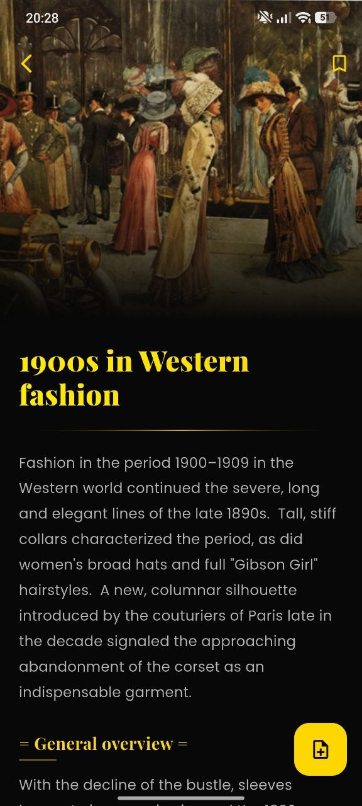
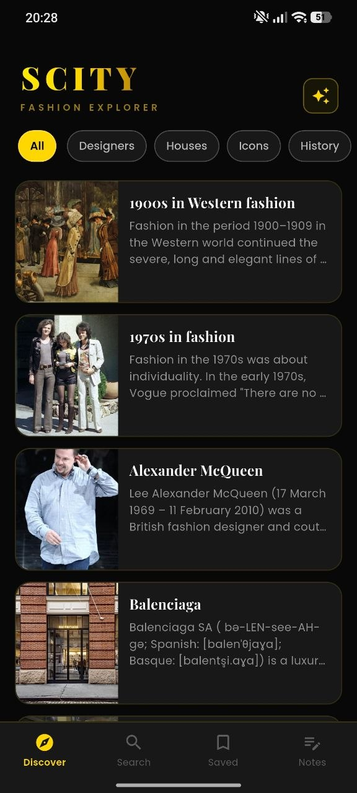
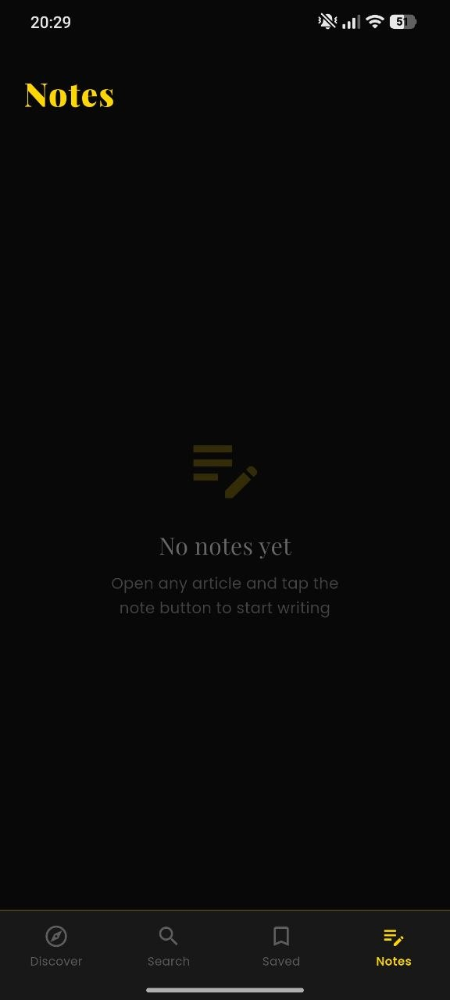
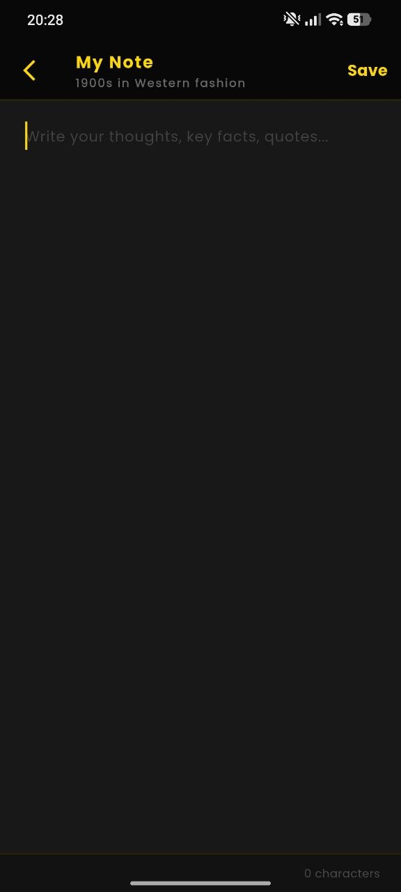
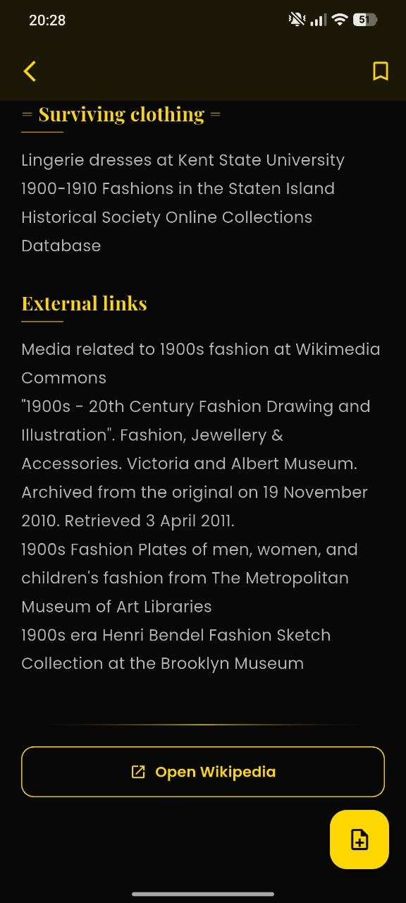
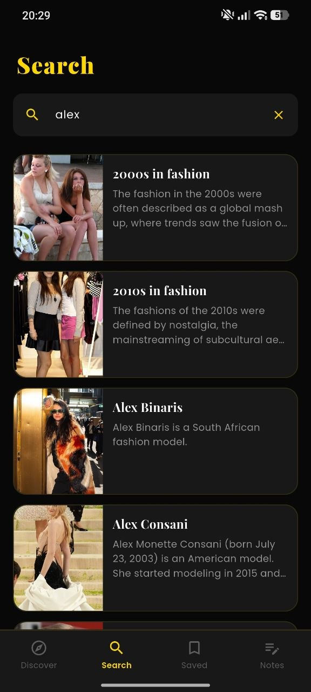
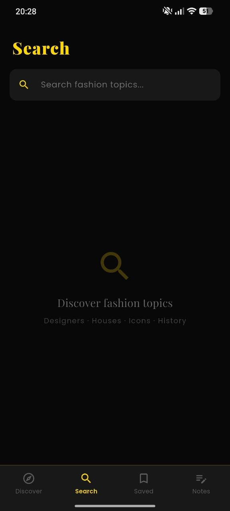
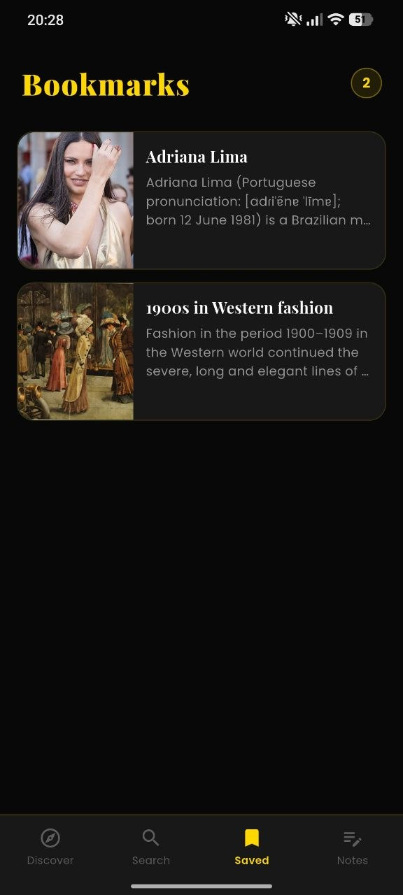

Discover
Swipe through fashion eras, designers, houses and icons without noisy screens or random distractions.
Scity keeps designers, houses, fashion eras, saved references and personal notes in one sharp dark interface. Open the app, find a topic, save what matters, and come back when inspiration hits.



Swipe through fashion eras, designers, houses and icons without noisy screens or random distractions.
Type a name or period and jump straight into matching fashion topics with visual article cards.
Keep the references you care about in one place, so your favorite articles never disappear in the feed.
Open an article and write your own thoughts, quotes, research ideas or styling references.
The landing page uses the screenshots directly, so the visitor sees the same visual mood they get after opening the app: black background, gold accents, editorial typography and archive-style reading.
Open on Google Play

Browse fashion topics by category.
Read fashion history in a clean editorial view.
Continue through sources and useful links.
Capture personal references and thoughts.

Find designers, houses, eras and icons.

Open matching topics instantly.
Keep your favorite references close.

Start writing after opening any article.
Save articles, return to them later and build your own quiet fashion archive. The app works like a personal reading room for style research.
Download the free app and explore fashion topics in a premium dark editorial space.
Download Now